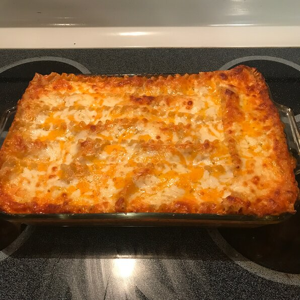

Four Cheese Lasagna

Description
Cheesy, rich, authentic and very filling lasagna
Prep: 30 min Cook: 45 min Servings: 8 Yield: 1 - 9x13 dish
Ingredients
- 16 ounces uncooked lasagna noodles
- 1 (26 ounce) can spaghetti sauce
- 1 pound cottage cheese
- 8 ounces shredded mozzarella cheese
- 8 ounces shredded Cheddar cheese
- 1 cup grated Parmesan cheese
Steps:
- Preheat oven to 375 degrees F (190 degrees C).
- Bring a large pot of lightly salted water to a boil. Add pasta and cook for 8 to 10 minutes or until al dente; drain.
- In a blender or with an electric mixer, blend tomato sauce and cottage cheese together until smooth. Spoon a little of the sauce mixture in the bottom of a 9x13 baking dish. Place a layer of cooked noodles over the sauce, and sprinkle a portion of the mozzarella, the cheddar and the parmesan over the noodles. Repeat layering of sauce, noodles and cheese; finish with a cheese layer.
- Bake in preheated oven 30 to 45 minutes, until cheese is bubbly and golden.